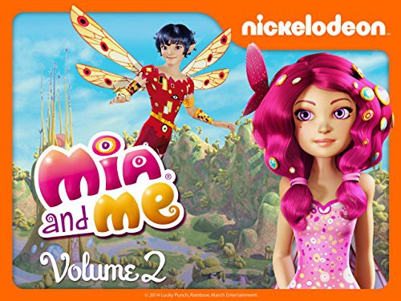

 
 IMDB-Wertung: 7.0 / 10
IMDB-Wertung: 7.0 / 10  Metascore: 0
Metascore: 0 
Mia ist nicht gerade begeistert von ihrem neuen Internat. Da kommt das Geschenk ihrer Eltern genau richtig - ihr längst vergessenes Lieblingskinderbuch und ein merkwürdiger Armreif. Mia kann es kaum glauben – der Armreif ist magisch und befördert sie geradewegs in die Welt ihres Buches. Plötzlich hat sie Flügel und kann mit Einhörnern sprechen. Und sie findet zwei neue Freunde - Yuko und Mo, zwei Elfen aus Centopia.
Jahr: 2011
Dauer: 23 Minuten
FSK:
Land: Niederlande Studio: ZDFTonspuren: - , - ,
Untertitel: Deutsch, Englisch,
Auflösung: 720p (1280x720) Größe: 767 MB
Genre: Abenteuer, Fantasy, Animation/Trick, Familie, TV-Serie
Regisseur: Gerhard Hahn, Andrea De Sica, Luca Morsella, Larry Whitaker, Marc Meyer
Drehbuch: Herbert Gehr, Gerhard Hahn, Jens-Christian Seele, Doug Sinclair, Marc Meyer
Soundtrack:
Darsteller:
- Rosabell Laurenti Sellers als Mia, 52 episodes, 2011-2015
- Stephie Theodora als Yuko, 31 episodes, 2015-2017
- Linda Ballantyne als Queen Mayla, 26 episodes, 2011-2012
- Alyson Court als Elf Girl, 26 episodes, 2011-2012
- Norma Dell'Agnese als Gargona, 26 episodes, 2011-2012
 Jay Natelle als , 26 episodes, 2011-2012
Jay Natelle als , 26 episodes, 2011-2012- Elia Nichols als , 26 episodes, 2011-2012
- Ron Rubin als Courtier Pan, 26 episodes, 2011-2012
- Mary Sellers als , 26 episodes, 2011-2012
- Jonathan Wilson als Phuddle, 26 episodes, 2011-2012
- Rod Wilson als King Raynor, 26 episodes, 2011-2012
- Evan Stern als Mo, 26 episodes, 2015
- Ana Sani als Yuko, 25 episodes, 2015
- Alanna LeVierge als Varia, 11 episodes, 2015
- Anthony Souter als Silvio Frascati, 10 episodes, 2015
- Angus McGruther als Simo, 4 episodes, 2017
- Douglas Dean als Banchiere, 2 episodes, 2015
- Ray Lovelock als Renzo, 2 episodes, 2015
- Josephine Benini als Violetta, 28 episodes, 2011-2015
- Asia Amodeo als , 26 episodes, 2011-2012
- Jordan Barrit als , 26 episodes, 2011-2012
- Filippo Berti als , 26 episodes, 2011-2012
- Riccardo Bono als , 26 episodes, 2011-2012
- Andrew Bryant als , 26 episodes, 2011-2012
- Michele Bufano als , 26 episodes, 2011-2012
- Livia Chaplin als , 26 episodes, 2011-2012
- Rebecca Cicali als , 26 episodes, 2011-2012
- Valentin Conrad als , 26 episodes, 2011-2012
- Andrew Craig als Mo, 26 episodes, 2011-2012
- Adam Elder als , 26 episodes, 2011-2012
- Elizabeth Hanna als Panthea, 26 episodes, 2011-2012
- Emily Abigail Holt als , 26 episodes, 2011-2012
- Tajja Isen als Yuko, 26 episodes, 2011-2012
- Fantappiè Duccio Maria als , 26 episodes, 2011-2012
- Adrian Moore als Vincent, 26 episodes, 2011-2012
- Vittoria Morescalchi als , 26 episodes, 2011-2012
- Jamaica Noferini als , 26 episodes, 2011-2012
- Lauria Sofia Patricia als , 26 episodes, 2011-2012
- John Pitonzo als , 26 episodes, 2011-2012
- Mary Jane Poole als , 26 episodes, 2011-2012
- Selene Rosiello als , 26 episodes, 2011-2012
- John Stocker als Polytheus, 26 episodes, 2011-2012
- Saphia Stoney als Paula, 26 episodes, 2011-2012
- Margherita Ventura als , 26 episodes, 2011-2012
- Jamie Watson als Polytheus, 26 episodes, 2011-2012
- Jodi Krangle als Queen Mayla, 26 episodes, 2015
- Di Bella Samuel Dimitri als , 25 episodes, 2011-2012
- Margot Nuccetelli als Mia, 25 episodes, 2017
- Luca Murphy als Mario, 3 episodes, 2015
- Laura Amadei als Queen Mayla, 2 episodes, 2011-2012
Datei: X:\Kinder Serien\Mia and Me Abenteuer in Centopia\S01\Mia And Me Abenteuer In Centopia S01e01.mkv seit 18.01.2019
Festplatte: Kinder-Filme+Trick
 Es gibt insgesamt 56 Filme in der Gruppe 'Kinder Serien'
Es gibt insgesamt 56 Filme in der Gruppe 'Kinder Serien'
")